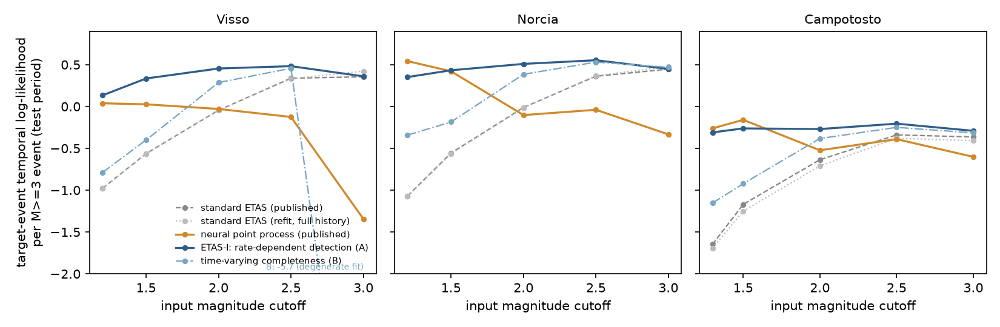

In plain terms
Earthquake forecasting models are usually judged by how well they predict when the next sizeable earthquake (magnitude 3 or more) will happen. The standard model, ETAS, assumes each earthquake can trigger more. In 2023, a neural network model was reported to beat ETAS clearly on the 2016–17 earthquake sequence in central Italy. The advantage was largest when the models were fed many small earthquakes.
But right after a big earthquake, seismic networks miss many small ones: the recordings overlap and smaller events are hidden. Standard ETAS assumes nothing is missed, so it misjudges how productive big earthquakes are. We asked whether that handicap, rather than anything the neural network learned, explains its advantage.
We gave ETAS a simple model of missed detections. When earthquakes come thick and fast, small ones are lost for a few tens of seconds after each event. We fitted it to exactly the same data and scored it on exactly the same earthquakes. The test was written down before we fitted it.
What we found. The improved ETAS closes 88–109% of the neural network's advantage in all three test periods. That meets the preregistered test. It does not clearly beat the neural network: in one period the network is still a little better, and in the other two they are statistically tied. Up to half of the improvement comes from the single day of the largest shocks.
On a computer-generated test catalog, the improved ETAS did not close the gap. So this result is about how this catalog misses earthquakes, not a general law.
What was done
Data and protocol. The plan was committed (795c015) before any incompleteness-aware ETAS was fitted. Everything uses the released data and protocol of Stockman, Lawson & Werner (2023):
- the machine-learning-enhanced AVN catalog;
- three train/test splits (Visso, Norcia and Campotosto);
- input events above a cutoff (magnitude 1.2 or 1.3);
- target events of magnitude 3 or more;
- the same test-period targets and scoring windows.
Reproduction. Our re-implementation reproduces their released standard-ETAS scores exactly (difference 0.0). The neural model's advantage G is +1.02, +1.61 and +1.39 nats per target event.
Models.
| Model | Description |
|---|---|
| S0 | Stockman's published standard ETAS. |
| S2 | Standard ETAS refitted here with full history. |
| A | ETAS-I. Events are detected unless a larger one occurred within a blind time T_b, so detection falls when activity is high (Hainzl 2016, 2021). It has one extra parameter, the blind time T_b; the b-value is fitted jointly rather than from the magnitude mean. |
| B | ETAS with a completeness magnitude that rises after each large shock and decays (Helmstetter et al. 2006). |
All are fitted by maximum likelihood on training data only. Of A and B, the primary model is the one with the better training fit. That was A in every configuration.
Statistic. The recovery fraction R = (A − S0) / (NPP − S0), with a 24-hour block-bootstrap CI. Supported if R ≥ 0.75 in at least 2 of 3 configurations.
Validation. The fitting code was checked on simulated catalogs where the truth is known: first before any real-data evaluation (D1), and again after review with the final code and the wide multi-start (D3). Averaged over the 8 seeds with imposed mainshocks, both A and B recover their generating parameters. A also does so without mainshocks; B's completeness parameters G and H are not identified when no large event occurs. The fitted likelihood reaches at least the true-parameter likelihood in 16 of 16 seeds for each model. One seed of A has two parameters about 2 and 3 standard errors off (z = −2.1 for K, 3.1 for μ; D1, D3).
Results
| Sequence (cutoff) | Neural gap G | ETAS-I score | Neural score | Recovery R (95% CI) |
|---|---|---|---|---|
| Visso (1.2) | +1.02 | 0.134 | 0.038 | 1.09 (0.69–1.31) |
| Norcia (1.2) | +1.61 | 0.352 | 0.542 | 0.88 (0.80–0.97) |
| Campotosto (1.3) | +1.39 | −0.310 | −0.261 | 0.97 (0.81–1.08) |
Scores are mean temporal log-likelihoods per target event; the published standard ETAS scores −0.978, −1.070 and −1.646.
Verdict: Supported. R ≥ 0.75 in all three configurations. The lower bound is above 0.75 in two; Visso's interval includes it.
Where the gap comes from:
- Giving ETAS its full history changes almost nothing (−0.001 to −0.037 nats).
- Refitting standard ETAS changes nothing (0.000 to −0.009).
- The detection model adds +1.11, +1.43 and +1.38.
- What remains between the neural model and ETAS-I is −0.10, +0.19 and +0.05.
ETAS-I does not beat the neural model at the preregistered cutoffs. Per target event, ETAS-I minus NPP is:
- +0.10 (95% CI −0.30 to +0.31) at Visso;
- −0.19 (−0.33 to −0.04) at Norcia, where the neural model is significantly better;
- −0.05 (−0.35 to +0.10) at Campotosto.
The gain is concentrated. The single 24-hour period containing the Norcia M6.1 mainshock (Visso and Norcia), or the January 2017 Campotosto shocks, carries 39–50% of ETAS-I's improvement over standard ETAS. The top three days carry 49–68%.
History is not the source of the gain. Scored with the same truncated history as the published ETAS, ETAS-I still gives R = 1.06, 0.86 and 0.95.


Other input cutoffs (secondary)
- The neural advantage disappears at higher cutoffs. The published neural gap shrinks as the cutoff rises, and is zero or negative from about magnitude 2.0–2.5. There, R is undefined.
- ETAS-I scores above the neural model in 12 of 15 configurations, with a CI above zero in 8. It is the best of the five models in 10.
- Much of that margin is the neural model failing at high cutoffs, not ETAS-I excelling. For example, at Visso 3.0 the neural model scores −1.34 against standard ETAS's +0.36.
Synthetic incomplete catalog (secondary)
On Stockman's synthetic incomplete catalog (cutoff 2.0), the neural model's advantage over published ETAS is +0.22.
- ETAS-I collapses to standard ETAS: its blind time goes to zero. Its R is −0.41 with full history, and 0.02 with truncated history.
- The completeness model B recovers only 12%.
There, the gap comes from a training-period bias in the ETAS parameters that neither detection model repairs. The AVN result therefore reflects the rate-dependent incompleteness of this real catalog. It is not evidence that incompleteness explains NPP gains in general.
Caveats
- ETAS-I is a strong baseline, not a physical measurement.
- Its fitted b-value (about 1.5 at the primary cutoffs) is higher than the catalog's at large magnitudes (1.1–1.25).
- Its branching ratio exceeds 1 in 11 of 15 fits, including the primary Campotosto fit (1.19).
- Its blind time rises with the cutoff, although a real network's blind time should not.
- One sequence. One sequence with three overlapping test periods.
- The Fusion model (Xiong et al. 2026) was not tested. Its released checkpoints do not match any released script.
- Fitting needed care (D2–D6):
- The first fit at Norcia was a local optimum, which gave R = 0.51; a wider search found the better optimum.
- Three numerical failure modes had to be guarded against: an underflow of the observed rate and a log floor, found in validation (D1), and a breakdown of the kernel approximation as c → 0, found by the wider search (D6).
- The preregistered decision rule never changed.
Independent review
The reviewer independently re-derived the ETAS-I target likelihood and re-integrated it with exact sums and finer quadrature, confirming it to within 0.0023 nats per target at most (3e-6 on average). They also confirmed there was no test leakage. The review was "fix first":
- Norcia local optimum. The reviewer found that the first Norcia fit was a local optimum. With the wider search, R rose from 0.51 to 0.88.
- Stale validation tables. The validation tables came from an earlier version of the code; they were regenerated.
- No b-value leak. The plan's claimed b-value leak in the published ETAS was wrong, and is withdrawn.
- Requested additions. The reviewer required the ETAS-I-minus-neural comparison, the concentration analysis, the truncated-history check, the synthetic result and the parameter caveats above.
The wider search then exposed a further numerical exploit, fixed by an accuracy guard (D6). All results are from the final code.